Аннотации типов и документация кода · МДК.01.01 · разработка программных модулей
Глава 4.3
Проверка типов:
Pylance и mypy по шагам
В этой главе по шагам разобраны две программы, которые сверяют код с аннотациями до запуска: Pylance в редакторе VS Code и mypy в терминале. Для каждой показано, как её включить, где увидеть ошибку и как прочитать сообщение. Все шаги выполняются на втором архиве проекта, где аннотации уже расставлены, и на одном файле с двумя неверными вызовами.
- Категория
- Инструменты
- Уровень
- Начальный
- Опирается на
- Главы 4.1 и 4.2
- Зачем это знать
- Находить неверные вызовы до запуска программы
§1Что такое проверка типов
В главе 4.1 опыты показали, что Python аннотации при запуске не проверяет: вызов с неверным типом либо проходит, либо падает внутри функции. В главе 4.2 разобрано, как записать тип в аннотации. Остался вопрос, кто сверяет вызовы с этими типами. Этим занимаются программы проверки типов.
Проверка типов — чтение кода программой, которая сверяет каждый вызов, присваивание и возврат значения с аннотациями. Сам код при этом не запускается: программа проверки работает с текстом файлов. Если в функцию format_title(text: str, ...) передано число, она сообщит об этом и назовёт строку, хотя до выполнения этой строки дело не дошло.
В курсе используются две такие программы. Правила сверки у них почти одинаковые, различаются место и момент работы. В главе обе разобраны на одном и том же файле с ошибками: сначала Pylance, затем mypy, в конце их ответы сравниваются.
| Программа | Где работает | Когда проверяет | Что проверяет |
|---|---|---|---|
| Pylance | Внутри VS Code, ставится вместе с расширением Python | Во время набора, после каждого изменения | Открытые файлы |
| mypy | В терминале, ставится через pip | По команде: перед коммитом и в проверках запроса на слияние | Указанный файл, папку или весь пакет |
Ассоциация: проверка орфографии
Текстовый редактор подчёркивает слово с ошибкой сразу при наборе. Перед отправкой большого документа запускают проверку всего текста, и она выдаёт полный список ошибок по страницам.
Pylance подчёркивает неверный вызов при наборе, в открытом файле. mypy по команде проверяет весь проект и печатает список ошибок с именами файлов и номерами строк.
Где не совпадаетПроверка орфографии сверяет слова со словарём. Проверка типов сверяет код с аннотациями, которые записаны в этом же проекте: где аннотаций нет, сверять не с чем.
§2Подготовка
Для работы нужен второй архив проекта — с аннотациями. Если он ещё не подготовлен по шагам из главы 4.1, скачайте и подготовьте его: распакуйте, откройте папку в VS Code, создайте окружение .venv и установите зависимости из requirements.txt.
Ошибки для опыта делаются не в коде проекта, а в отдельном файле: его можно править как угодно, а после опытов удалить, и проект останется рабочим. Создайте в корне проекта файл proba.py — рядом с main.py. В нём два вызова функций проекта с аргументами не того типа. Обе функции есть в таблице подписей главы 4.1, §4:
from app.utils.formatter import format_kopeks, format_title title = format_title(40) price = format_kopeks("1250")
Подписи обеих функций — в модуле app/utils/formatter.py: format_title(text: str, width: int = 40) -> str и format_kopeks(kopeks: int) -> str. В строке 3 вместо текста заголовка передано число, в строке 4 вместо числа копеек — строка. Ошибки известны заранее, поэтому по ним удобно проверять, что инструмент настроен верно: он должен найти обе. Сначала их ищет редактор, затем терминал.
§3Pylance: проверка в редакторе
Pylance — расширение VS Code, которое разбирает код на Python. Подсказки и автодополнение из главы 4.1 строил он же. При включённой проверке Pylance ещё и подчёркивает ошибки типов. Ниже восемь шагов: первые два готовят редактор, третий показывает, что без настройки ошибок не видно, четвёртый включает проверку, остальные — работа с найденными ошибками.
Убедитесь, что стоит Pylance
Откройте панель расширений: CtrlCmd + Shift + X, или значок из четырёх квадратов на левой полосе. Введите в поле поиска @installed — останутся только установленные расширения.
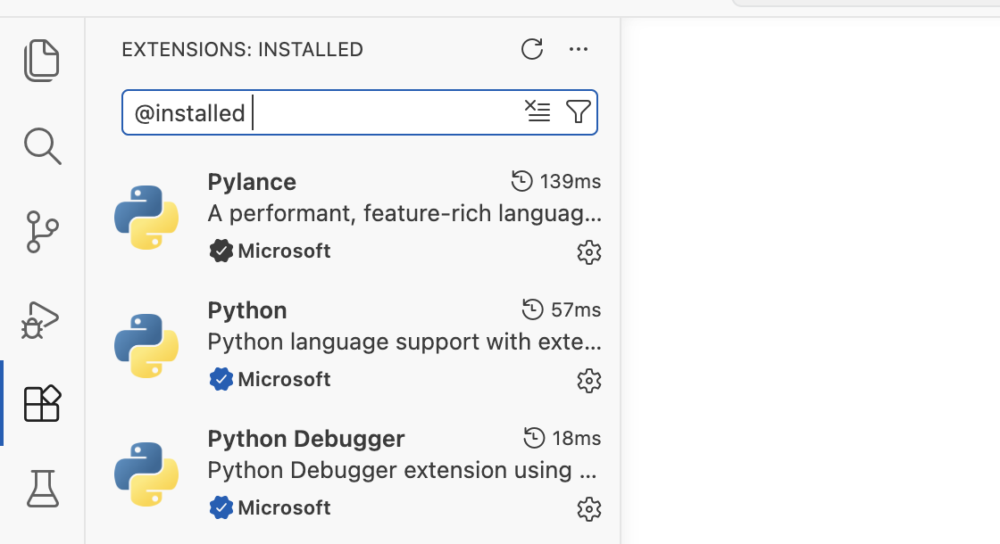
ms-python.python и нажмите Install.Выберите интерпретатор из окружения проекта
Откройте палитру команд: CtrlCmd + Shift + P. Наберите Python: Select Interpreter и нажмите Enter.
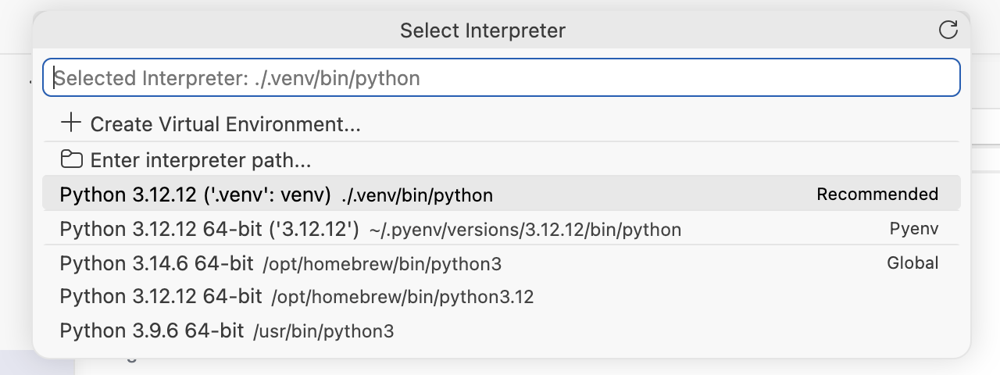
'.venv': venv — интерпретатор из окружения проекта, VS Code помечает его словом Recommended. Остальные строки — интерпретаторы, установленные на компьютере; их список у вас будет другим. После выбора в правом нижнем углу окна появится надпись .venv (3.12.12).Этот шаг нужен, чтобы Pylance искал импортируемые модули там же, где их найдёт программа при запуске. С другим интерпретатором он не увидит пакеты из .venv и подчеркнёт строки import как ошибочные.
Откройте proba.py и посмотрите на него без проверки
Откройте proba.py из проводника. В обоих вызовах типы не совпадают с аннотациями, но подчёркиваний нет.
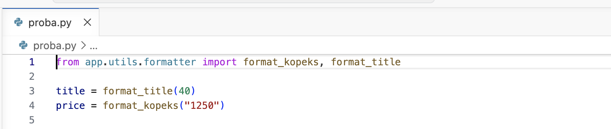
off. В нём Pylance использует аннотации для подсказок и автодополнения, а ошибки типов не показывает. Подчёркиваются только ошибки синтаксиса, ненайденные модули и неизвестные имена.Ошибки в файле есть, а редактор их не показывает. Значит, проверку нужно включить — это следующий шаг.
Включите режим basic в настройках проекта
Откройте настройки: CtrlCmd + ,. Вверху окна две вкладки — User и Workspace. Выберите Workspace: так настройка запишется в папку проекта и будет действовать у каждого, кто откроет этот проект. Вкладка User меняет настройки редактора для всех проектов на этом компьютере. В поле поиска введите python.analysis.typeCheckingMode.
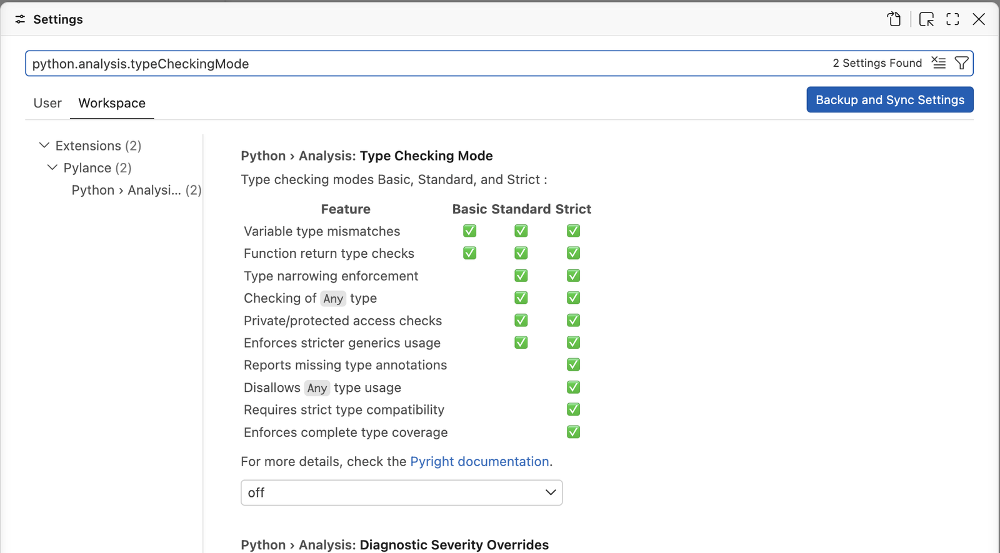
off.Щёлкните по полю со значением off и выберите basic.
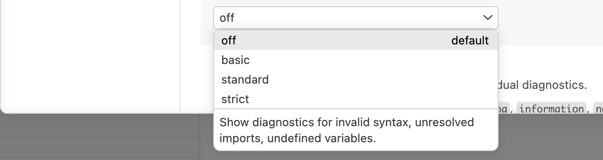
off — значение по умолчанию, basic — режим курса. Чем режимы отличаются, показано в §4 на одном файле, проверенном во всех четырёх.Выбранное значение VS Code сохраняет сам: создаёт файл .vscode/settings.json, если его не было, и дописывает в него строку. В проекте темы такой файл уже есть. Откройте его из проводника, чтобы убедиться, что строка добавилась в конец:
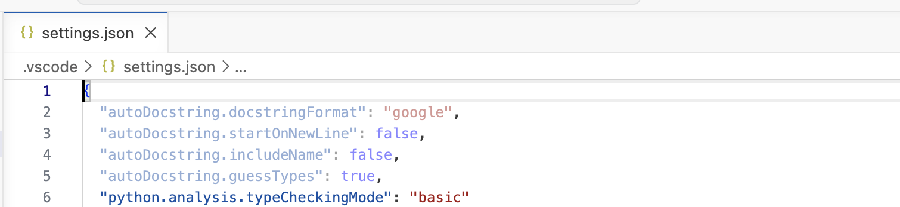
"python.analysis.typeCheckingMode": "basic". Строки выше относятся к генератору описаний из главы 4.10; пока расширение autoDocstring не установлено, VS Code показывает их бледным цветом. Ту же строку можно дописать в файл руками — результат одинаковый.Посмотрите на подчёркивания
Вернитесь на вкладку proba.py — тот же файл, что на шаге 3. Через секунду-две после смены режима Pylance проверит его заново.
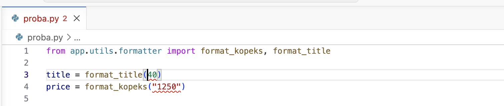
40 в строке 3 и "1250" в строке 4. На вкладке после имени файла — цифра 2: столько ошибок в файле. Та же цифра появляется у имени файла в проводнике.Прочитайте сообщение
Наведите указатель на подчёркнутое 40 или поставьте на него курсор и нажмите CtrlCmd + K, затем CtrlCmd + I.
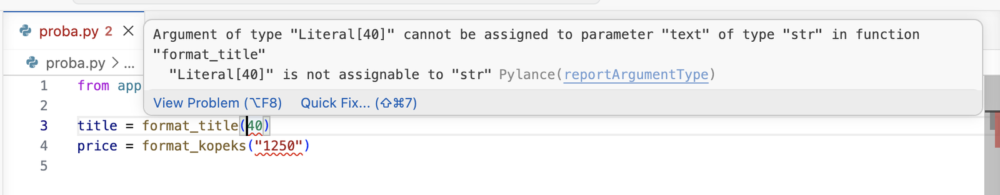
40.Сообщение читается по частям:
Argument of type "Literal[40]"— передан аргумент типаLiteral[40]. Так Pylance называет тип конкретного значения: «ровно число40». Это частный случайint.cannot be assigned to parameter "text" of type "str"— нельзя передать в параметрtext, который ожидает строку;in function "format_title"— функция, которую вызывали;"Literal[40]" is not assignable to "str"— короткая причина: число не подходит туда, где ждут строку;Pylance(reportArgumentType)— кто сообщил и по какому правилу. По имени правила его находят в документации.
Ниже сообщения две ссылки. View Problem раскрывает описание прямо в тексте файла, Quick Fix предлагает готовые исправления, если они есть. Для ошибок типов готового исправления обычно нет: какое значение нужно передать, решает разработчик.
Откройте панель Problems
Наведение показывает одно сообщение. Чтобы увидеть все ошибки сразу, открывают панель Problems — в ней собраны сообщения всех открытых файлов: CtrlCmd + Shift + M, или щелчок по счётчику ошибок в левом нижнем углу окна.
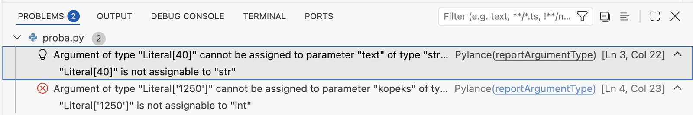
proba.py их две. В каждой строке — сообщение, источник Pylance(reportArgumentType) и место: [Ln 3, Col 22] — строка 3, столбец 22. Щелчок по строке переводит курсор к месту ошибки.Исправьте вызовы
Передайте значения тех типов, которые записаны в аннотациях: текст заголовка и целое число копеек.
from app.utils.formatter import format_kopeks, format_title title = format_title(" Итог ") price = format_kopeks(125000)
Подчёркивания пропадут, панель Problems опустеет, счётчик в левом нижнем углу покажет 0. Файл проверен, хотя ни разу не запускался.
§4Четыре режима на одном файле
На шаге 4 из четырёх режимов выбран basic. Чтобы было видно, что меняется при выборе другого режима, один и тот же файл проверен во всех четырёх. В файле шесть ошибок разного рода: от имени, которого нет вовсе, до функции без аннотаций. Каждая строка подобрана так, чтобы её находил свой режим.
import os from app.utils.formatter import format_title from app.utils.text import _squash_spaces def total(prices): return sum(prices) def pick(flag: bool) -> str: if flag: label = "есть выручка" return label heading = format_title(40) clean = _squash_spaces("иванов пётр") print(undefined_name)
Что не так в каждом месте и какой режим это находит:
| Строка | Что не так | Что будет при запуске | off | basic | standard | strict |
|---|---|---|---|---|---|---|
19, print(undefined_name) | Имени undefined_name нигде нет — опечатка или забытая переменная | NameError | ⚠ | ✕ | ✕ | ✕ |
17, format_title(40) | Число вместо строки: аннотация text: str | AttributeError: 'int' object has no attribute 'center' — внутри функции | — | ✕ | ✕ | ✕ |
14, return label | Переменная создаётся только внутри if. При flag=False её нет | UnboundLocalError — только при pick(False) | — | — | ✕ | ✕ |
7–8, def total(prices) | У параметра нет аннотации, тип неизвестен, сверять вызовы не с чем | работает | — | — | — | ✕ |
4 и 18, _squash_spaces | Имя с подчёркиванием — служебная функция модуля text.py, снаружи её не вызывают | работает | — | — | — | ✕ |
1, import os | Модуль импортирован и не используется | работает | — | — | — | ✕ |
Обозначения: ✕ — ошибка (красное подчёркивание), ⚠ — предупреждение (жёлтое), — — режим строку не отмечает. Таблица читается сверху вниз как лестница: каждый следующий режим находит всё, что находил предыдущий, и добавляет своё. Ниже — как это выглядит в редакторе. Файл тот же, менялась только строка typeCheckingMode в .vscode/settings.json; под кодом открыта панель Problems со всеми сообщениями.
proba.py в четырёх режимахпереключите режим
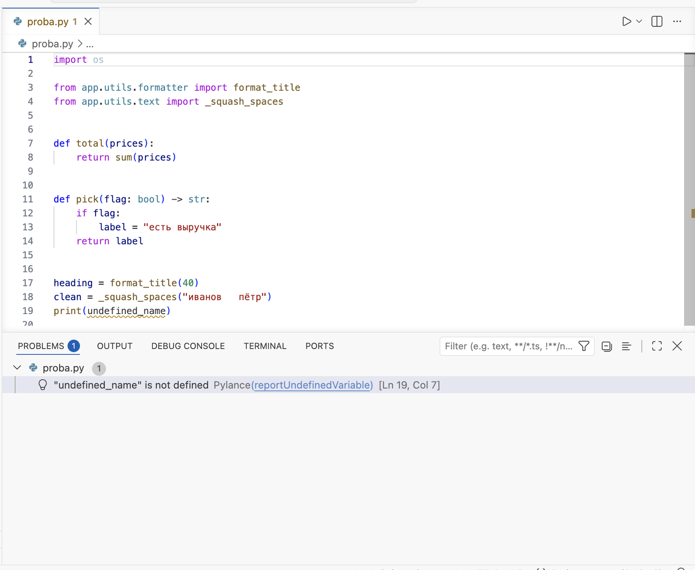
off. Одно предупреждение, жёлтое: "undefined_name" is not defined. Ошибки типов не показаны вовсе — число 40 в строке 17 не подчёркнуто.Что видноТолько имена, которых нет в программе. Это та же проверка, что выполняет сам Python при запуске, только раньше. Аннотации в off идут лишь в подсказки и автодополнение.
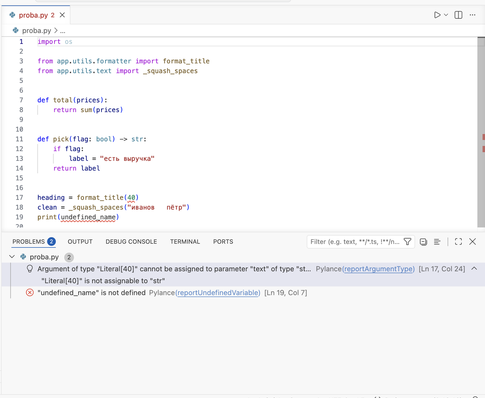
basic. Две ошибки: неверный аргумент format_title(40) с правилом reportArgumentType и неизвестное имя — теперь красным, как ошибка.Что добавилосьСверка с аннотациями: аргументы, присваивания, возвраты, обращения к значению, которое может быть None. Это то, что разбирается в главах 4.2–4.4, и ближе всего к тому, что проверяет mypy.
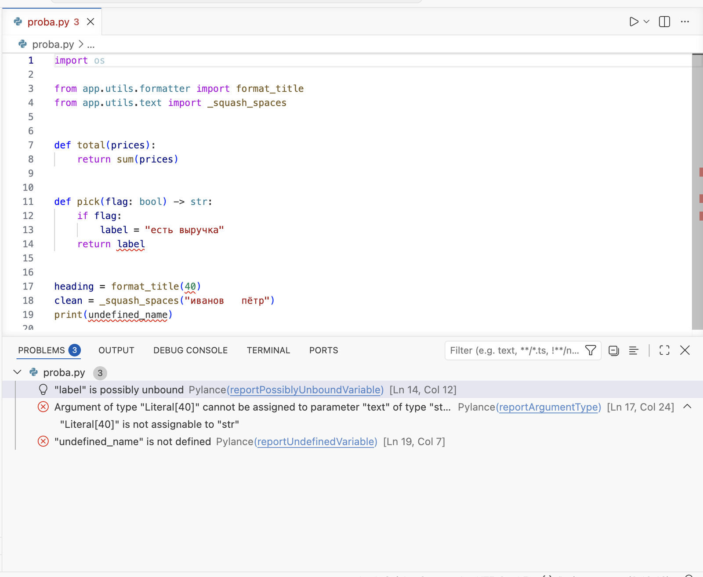
standard. К двум ошибкам добавилась третья: "label" is possibly unbound — «переменная label, возможно, не создана», правило reportPossiblyUnboundVariable.Что добавилосьПравила, которые не связаны с аннотациями напрямую, но находят настоящие ошибки: переменная, созданная только в одной ветке if, обращение к несуществующему атрибуту функции, несовместимое переопределение метода в классе-наследнике. mypy без дополнительных настроек строку 14 не отмечает.
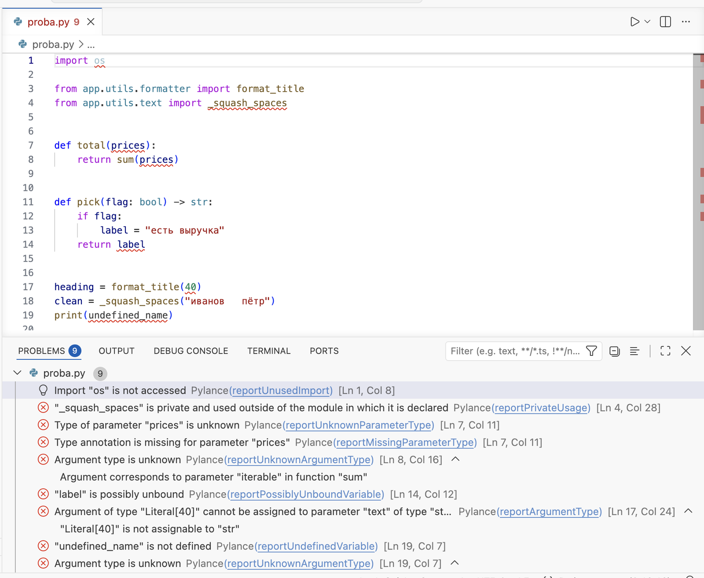
strict. Девять сообщений. Новые: Import "os" is not accessed — импорт не используется; "_squash_spaces" is private — служебная функция вызвана из другого модуля; три сообщения про prices — у параметра нет аннотации, и его тип неизвестен везде, где он используется.Что добавилосьТребование полной типизации: у каждого параметра должна быть аннотация, у каждого значения — известный тип. Плюс правила аккуратности кода — неиспользуемые импорты, служебные имена.
Как это сказывается на учебном проекте. На втором архиве, где аннотации расставлены, все четыре режима дают ноль замечаний. На первом архиве, без аннотаций, basic и standard тоже молчат — сверять вызовы не с чем, — а strict выдаёт 86 замечаний, большая часть из них — «тип неизвестен» и «нет аннотации».
| Режим | Что проверяет | Когда выбирают |
|---|---|---|
off | Только синтаксис, ненайденные модули и неизвестные имена | Когда проверка типов не нужна, а подсказки нужны |
basic | Всё, что противоречит записанным аннотациям | Режим курса: ближе всего к тому, что проверяет mypy в проверках при сдаче |
standard | То же и подозрительные места вроде переменной из одной ветки if | Можно включить для себя: замечания полезные, но mypy их без настройки не повторит |
strict | Полная типизация и аккуратность кода | Проекты, где аннотации обязательны везде; на первом архиве — 86 замечаний сразу |
Поэтому в курсе выбран basic: редактор подчёркивает почти то же, что потом сообщит mypy, и замечания двух программ почти не расходятся. Отличия разобраны в §7. После опыта удалите файл или верните режим basic, если меняли его.
§5mypy: проверка в терминале
Pylance нашёл обе ошибки, но у него два ограничения: он проверяет только файлы, открытые в редакторе, и работает только у того, кто пишет код в VS Code. Для проверки всего проекта и для проверок при сдаче работы нужна программа, которую запускают командой.
mypy — программа проверки типов для Python, которая запускается командой в терминале. В отличие от Pylance, она проверяет и те файлы, которые сейчас не открыты, и печатает один отчёт на весь проект. Поэтому в проверках запроса на слияние запускают её. В проекте mypy перечислен в requirements.txt и уже установлен в .venv.
Чтобы сравнить две программы на одном материале, mypy проверяет тот же файл. Верните в proba.py оба неверных вызова — format_title(40) и format_kopeks("1250") — и сохраните файл.
Откройте терминал и проверьте, что mypy установлен
Терминал редактора открывается сочетанием Ctrl + ` (на всех системах) или через меню Terminal → New Terminal. Он запускается в папке проекта. Выполните:
$ .venv/bin/mypy --version> .venv\Scripts\mypy --version
Ответ — mypy 1.15.0 (compiled: yes). Если вместо него сообщение «нет такого файла», зависимости не установлены: выполните установку из requirements.txt, как в главе 4.1.
Проверьте файл
Укажите после mypy имя файла:
$ .venv/bin/mypy proba.py> .venv\Scripts\mypy proba.py
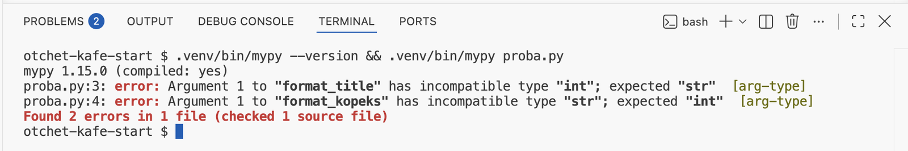
&&. Первая строка ответа — версия. Дальше по строке на каждую ошибку: proba.py:3 и proba.py:4 — файл и номер строки. Последняя строка — итог: Found 2 errors in 1 file (checked 1 source file), найдено две ошибки в одном файле, проверен один файл.Программа при этом не запускалась: mypy только прочитал proba.py и модуль formatter.py, из которого импортированы функции.
Перейдите к месту ошибки
Имя файла с номером строки в выводе — ссылка. Удерживайте CtrlCmd и щёлкните по proba.py:3: VS Code откроет файл и поставит курсор в строку 3. В длинном отчёте так не приходится искать файл в проводнике и строку по номеру.
Исправьте и запустите проверку снова
Замените вызовы на исправленные — как в последнем шаге части про Pylance, сохраните файл (CtrlCmd + S) и повторите команду. Стрелка ↑ в терминале возвращает предыдущую команду, набирать её заново не нужно.
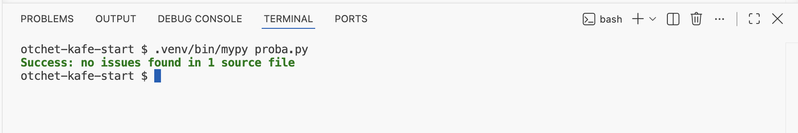
Success: no issues found in 1 source file — несовпадений с аннотациями нет, проверен один файл. mypy читает файл с диска, поэтому перед запуском его нужно сохранить. Pylance проверяет и несохранённый текст.Проверьте весь пакет
Вместо имени файла можно указать папку. mypy пройдёт по всем файлам .py в ней и во вложенных папках:
$ .venv/bin/mypy app> .venv\Scripts\mypy app
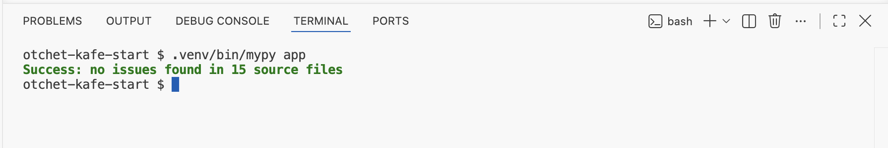
checked 15 source files — проверено пятнадцать файлов: десять модулей и пять файлов __init__.py. Ошибок нет: аннотации во втором архиве расставлены и вызовы им соответствуют.Команда mypy app запускается перед коммитом и в проверках репозитория. Файл proba.py в пакет app не входит; после опытов его удаляют.
§6Как читать строку вывода mypy
Каждая ошибка в отчёте mypy занимает одну строку, и строение у всех строк одинаковое. Разберём первую строку из шага 2 части про mypy:
error — ошибка, note — пояснение к ошибке или ответ на запрос типа. Сообщение называет, что не совпало. Код в квадратных скобках — имя правила: по нему ошибку находят в документации mypy.Целиком сообщение звучит так: Argument 1 to "format_title" has incompatible type "int"; expected "str" — «первый аргумент функции format_title имеет несовместимый тип int; ожидался str». Почти все сообщения mypy построены по одной схеме: что за место (аргумент, присваивание, возврат), какой тип пришёл и какой ожидался. Коды, которые встречаются чаще других:
| Код mypy | Правило Pylance | Что не так | Пример |
|---|---|---|---|
arg-type | reportArgumentType | Аргумент не того типа | format_title(40) |
assignment | reportAssignmentType | Переменной с аннотацией присвоено значение не того типа | first: str = grades[0], где grades: list[int] |
return-value | reportReturnType | Функция возвращает не тот тип, что записан после стрелки | -> str, а в теле return kopeks / 100 |
return | reportReturnType | Есть путь выполнения без return | return только внутри if |
union-attr | reportOptionalMemberAccess | Обращение к атрибуту значения, которое может быть None | found.kopeks без проверки на None |
attr-defined | reportAttributeAccessIssue | У объекта нет такого атрибута | order.kopek вместо order.kopeks |
no-untyped-def | — в режиме basic | У функции нет аннотаций | любая функция первого архива |
Код no-untyped-def разобран ниже, в §8. Остальные коды встречаются в примерах главы 4.4 вместе с настоящим выводом mypy.
§7Одна ошибка в двух программах
Pylance и mypy нашли в proba.py одни и те же две ошибки, но описали их по-разному. Сравнение для строки 3:
| Pylance | mypy | |
|---|---|---|
| Где видно | Подчёркивание, всплывающее сообщение, панель Problems | Строка в терминале |
| Тип переданного значения | Literal[40] — конкретное число | int — целое число |
| Как назван параметр | По имени: "text" | По номеру: Argument 1 |
| Имя правила | reportArgumentType | arg-type |
| Место | [Ln 3, Col 22] — строка и столбец | proba.py:3 — файл и строка |
В большинстве случаев две программы согласны. Расхождения бывают в пограничных случаях: например, пустой словарь totals = {} без аннотации mypy считает ошибкой, а Pylance в режиме basic — нет. Когда результаты расходятся, в курсе решает mypy: его команда стоит в проверках перед сдачей работы.
§8Функции без аннотаций
До сих пор проверялся код, в котором аннотации есть: ошибки находились в вызовах. В первом архиве проекта аннотаций нет совсем, и проверка ведёт себя иначе. По умолчанию mypy пропускает функции, у которых нет ни одной аннотации: их тела он не проверяет и об отсутствии типов не сообщает. Проект совсем без аннотаций прошёл бы проверку с ответом Success, хотя сверять в нём нечего. Чтобы такие функции считались ошибкой, в файле pyproject.toml включают параметр disallow_untyped_defs. В проекте темы он уже включён:
[tool.mypy] # Функция без аннотаций — ошибка: так проверка находит места, # где типы забыли указать. disallow_untyped_defs = true
mypy читает этот файл сам, если запускать его из корня проекта. Откройте первый архив — без аннотаций — и выполните там ту же команду mypy app:
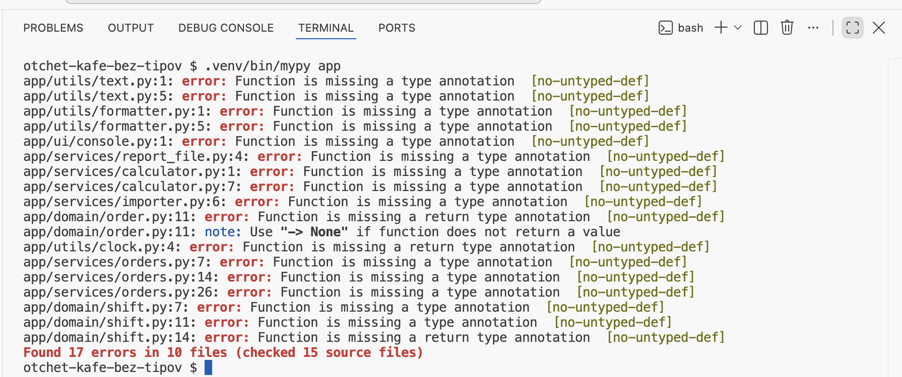
no-untyped-def. Сообщение Function is missing a type annotation означает, что аннотаций нет совсем. Function is missing a return type annotation пишется у функций, у которых нет параметров, кроме self: им не хватает только типа результата. Строка note у order.py:11 подсказывает решение: Use "-> None" if function does not return a value. Итог — Found 17 errors in 10 files.Этот перечень — план работы для практики в главе 4.5: когда все семнадцать функций получат аннотации, ответ сменится на Success. Pylance в режиме basic функции без аннотаций не подчёркивает — это правило включено только в режиме strict, как видно в таблице на шаге 4.
§9Какой тип видит проверка
В сообщениях выше проверка называла типы значений: int, str, Literal[40]. Не все эти типы записаны в коде: у локальных переменных аннотаций обычно нет, и тип проверка выводит сама — из присвоенного значения. Когда сообщение непонятно, полезно посмотреть, какой тип она вывела. Способов два.
В редакторе — наведением указателя на имя переменной. Замените содержимое proba.py: первая строка — импорт from app.services.calculator import grade_bounds, вторая пустая, третья — присваивание bounds = grade_bounds([5, 3, 4]). Аннотации у переменной bounds нет. Наведите указатель на её имя:
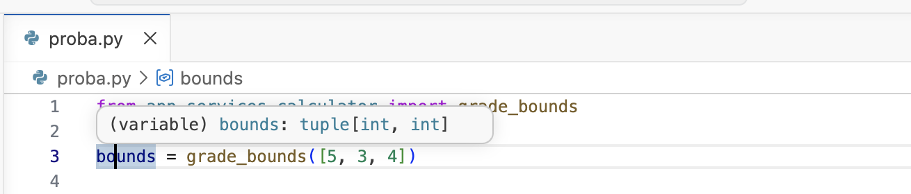
(variable) bounds: tuple[int, int] — Pylance взял тип из аннотации результата grade_bounds(...) -> tuple[int, int].В mypy — временной строкой reveal_type(...). Допишите её в тот же файл четвёртой строкой. Импортировать её не нужно: mypy узнаёт это имя сам и печатает тип выражения в скобках строкой с уровнем note.
from app.services.calculator import grade_bounds bounds = grade_bounds([5, 3, 4]) reveal_type(bounds)
proba.py:4: note: Revealed type is "tuple[builtins.int, builtins.int]" Success: no issues found in 1 source file
Приставка builtins. — полное имя встроенного типа: builtins.int и есть int. При запуске программы функции reveal_type нет, и строка завершится ошибкой NameError, поэтому после просмотра её удаляют. Этим приёмом пользуются в главе 4.4: в примерах он показывает, как проверка понимает тип внутри условий и циклов.
§10Чего проверка не находит
Две программы, разобранные в главе, находят любые несовпадения с аннотациями. Есть ошибки другого рода, которых они не видят. Проверка работает с текстом программы. Данные, которые появятся при запуске, ей недоступны. В load_orders сумма читается из файла смены вызовом int(row["kopeks"]). Для проверки всё верно: int(...) возвращает целое число. Если же в файле окажется строка сто, программа завершится ошибкой ValueError, и проверка об этом не предупредит.
| Находит проверка типов | Не находит проверка типов |
|---|---|
| Вызов с аргументом не того типа | Неверные данные в файле или в ответе сервера |
Обращение к атрибуту значения, которое может быть None | Ошибку в расчёте: + вместо - между числами |
| Возврат значения не того типа | Нарушение ограничений вроде «оценка от 2 до 5» |
| Опечатку в имени атрибута | Всё, что помечено типом Any |
Правую колонку закрывают тесты и проверки данных внутри функций. Проверка типов находит один класс ошибок — несовпадение типов — сразу во всём проекте.
Бывает, что замечание верно по форме, но в конкретной строке исправлять нечего: например, в тесте намеренно передаётся неверный тип, чтобы проверить сообщение об ошибке. Такое замечание подавляют комментарием # type: ignore с кодом правила в квадратных скобках:
format_title(40) # type: ignore[arg-type]
Код в скобках обязателен: без него подавляются все замечания на строке, в том числе те, что появятся после будущих правок. В работах курса подавления не используются: каждое замечание исправляется аннотацией или кодом.
§11Проверьте себя
Pylance установлен, а неверный вызов не подчёркнут. Что проверить?
Режим проверки: по умолчанию он off. В настройках проекта нужно выбрать basic — в файле .vscode/settings.json появится строка "python.analysis.typeCheckingMode": "basic". Если подчёркнуты строки import, выбран не тот интерпретатор: нужен .venv.
Строка return label стоит после if, внутри которого создаётся label. В каком режиме Pylance её подчеркнёт и чем она опасна?
В режимах standard и strict, сообщение "label" is possibly unbound. Если условие ложно, переменная не создаётся, и при запуске будет UnboundLocalError. В basic строка не подчёркнута: это не противоречие аннотациям, а подозрительное место в логике.
Чем отличается настройка на вкладке Workspace от настройки на вкладке User?
Workspace записывает настройку в .vscode/settings.json внутри проекта: она действует только в нём и попадает в репозиторий вместе с кодом. User меняет настройки редактора на этом компьютере для всех проектов.
Что означает строка proba.py:4: error: … [arg-type]?
В файле proba.py на строке 4 ошибка: аргумент не того типа. arg-type — код правила, по которому ошибку находят в документации.
Файл исправлен, Pylance подчёркиваний не показывает, а mypy по-прежнему сообщает об ошибке. Почему?
Файл не сохранён. Pylance проверяет текст в редакторе, mypy — файл на диске.
Проект без единой аннотации проходит mypy app без ошибок. Почему и как это исправить?
По умолчанию mypy не проверяет функции без аннотаций. Параметр disallow_untyped_defs = true в разделе [tool.mypy] файла pyproject.toml превращает каждую такую функцию в ошибку no-untyped-def.
Проверка типов прошла. Может ли программа завершиться ошибкой при запуске?
Может. Данные из файлов и сети проверке недоступны, расчёты и ограничения значений она не проверяет, а значения типа Any пропускает. Такие ошибки находят тесты и проверки внутри функций.
§12Шпаргалка по главе
Settings → Workspace
"python.analysis.typeCheckingMode": "basic"
off < basic < standard < strict
подчёркивание и наведение
панель Problems: Ctrl+Shift+M
.venv/bin/mypy proba.py.venv\Scripts\mypy proba.py
.venv/bin/mypy app.venv\Scripts\mypy app
файл:строка: error: сообщение [код]
[tool.mypy]
disallow_untyped_defs = true
наведение на имя — Pylance
reveal_type(x) — mypy
Итог главы
Pylance проверяет открытые файлы во время набора, когда в настройках проекта выбран режим basic; ошибки видны подчёркиванием, во всплывающем сообщении и в панели Problems. mypy проверяет указанный файл или весь пакет по команде в терминале и печатает по строке на ошибку: файл, номер строки, сообщение «пришло / ожидалось» и код правила. Параметр disallow_untyped_defs заставляет mypy сообщать о функциях без аннотаций — на первом архиве их семнадцать. Тип, который вывела проверка, показывают наведение в редакторе и reveal_type в mypy.
- Запуск, настройка и коды ошибок — документация mypy, разделы Config file и Error codes; disallow_untyped_defs.
- Режимы проверки Pylance — справочник параметров Python в VS Code, параметр
python.analysis.typeCheckingMode; имена правил — документация Pyright, Configuration. - Выбор интерпретатора — VS Code, Python environments.
- Выводы получены запуском на архивах проекта темы, mypy
1.15; кадры сняты в VS Code1.138с расширением Pylance2026.4.
Проверка типов:
gopls, компилятор и go vet по шагам
В этой главе по шагам разобраны программы, которые сверяют код Go с типами до запуска: gopls в редакторе VS Code, компилятор в терминале и go vet — он находит подозрительные места в коде, который уже собирается. Для каждой показано, как её запустить, где увидеть ошибку и как прочитать сообщение. Все шаги выполняются на втором архиве проекта и на одном файле с двумя неверными вызовами.
- Категория
- Инструменты
- Уровень
- Начальный
- Опирается на
- Главы 4.1 и 4.2
- Зачем это знать
- Находить неверные вызовы до запуска программы
§1Что такое проверка типов в Go
В главе 4.1 опыты показали, что Go не собирает программу, в которой тип аргумента не совпадает с подписью. В главе 4.2 разобрано, как типы записываются. Остался вопрос, где и когда эта сверка происходит и как увидеть её результат.
Проверка типов — чтение кода программой, которая сверяет каждый вызов, присваивание и возврат значения с объявленными типами. Сам код при этом не запускается: программа работает с текстом файлов. Если в FormatTitle(text string, width int) передано число вместо строки, она сообщит об этом и назовёт строку файла.
В Python проверку выполняют отдельные программы, и её можно не запускать. В Go проверка типов — часть компилятора: без неё программа не собирается. Поэтому вопрос не в том, включать ли проверку, а в том, где удобнее видеть её результат. Мест три, а четвёртая программа добавляет проверки сверх типов:
| Программа | Где работает | Когда проверяет | Что находит |
|---|---|---|---|
| gopls | внутри VS Code, ставится вместе с расширением Go | во время набора, после каждого изменения | ошибки компиляции во всех пакетах модуля и часть замечаний go vet |
| go build | в терминале, входит в Go | по команде: перед запуском, перед коммитом, в проверках запроса на слияние | ошибки компиляции |
| go vet | в терминале, входит в Go | по команде, после успешной сборки | код, который собирается, но почти наверняка ошибочен |
| staticcheck | в терминале, ставится отдельно | по команде | ещё более широкий набор подозрительных мест |
Ассоциация: проверка орфографии
Текстовый редактор подчёркивает слово с ошибкой сразу при наборе. Перед отправкой большого документа запускают проверку всего текста, и она выдаёт полный список ошибок по страницам.
gopls подчёркивает неверный вызов при наборе. go build по команде проверяет весь модуль и печатает список ошибок с именами файлов и номерами строк.
Где не совпадаетДокумент с орфографическими ошибками всё равно можно отправить. Программу на Go с ошибкой типа собрать нельзя: компилятор не создаст исполняемый файл, пока ошибка не исправлена.
§2Подготовка
Для работы нужен второй архив проекта. Если он ещё не подготовлен по шагам из главы 4.1, скачайте его, распакуйте и откройте папку с go.mod в VS Code.
Ошибки для опыта делаются не в коде проекта, а в отдельной маленькой программе: её можно править как угодно, а после опытов удалить, и проект останется рабочим. Создайте в корне проекта папку proba, а в ней файл main.go. В нём два вызова функций проекта с аргументами не того типа. Обе функции есть в таблице подписей главы 4.1, §4:
package main import "example.com/otchet-kafe/internal/utils" func main() { title := utils.FormatTitle(40, 40) price := utils.FormatKopeks("1250") _, _ = title, price }
Подписи обеих функций — в пакете internal/utils: FormatTitle(text string, width int) string и FormatKopeks(kopeks int) string. В строке 6 вместо текста заголовка передано число, в строке 7 вместо числа копеек — строка. Строка 8 нужна, чтобы переменные title и price где-то использовались: неиспользованная переменная в Go — тоже ошибка сборки, и она заслонила бы опыт. Знак _ означает «значение не нужно».
Ошибки известны заранее, поэтому по ним удобно проверять, что инструмент работает: он должен найти обе. Сначала их ищет редактор, затем терминал.
§3gopls: проверка в редакторе
gopls — языковой сервер Go, который запускает расширение Go в VS Code. Подсказки и автодополнение из главы 4.1 строил он. Ошибки типов gopls показывает сразу: включать проверку, как режим Pylance в ветке Python, не нужно. Ниже шесть шагов: первые два готовят редактор, остальные — работа с найденными ошибками.
Убедитесь, что стоит расширение Go
Откройте панель расширений: CtrlCmd + Shift + X, или значок из четырёх квадратов на левой полосе. Введите в поле поиска @installed — останутся только установленные расширения.
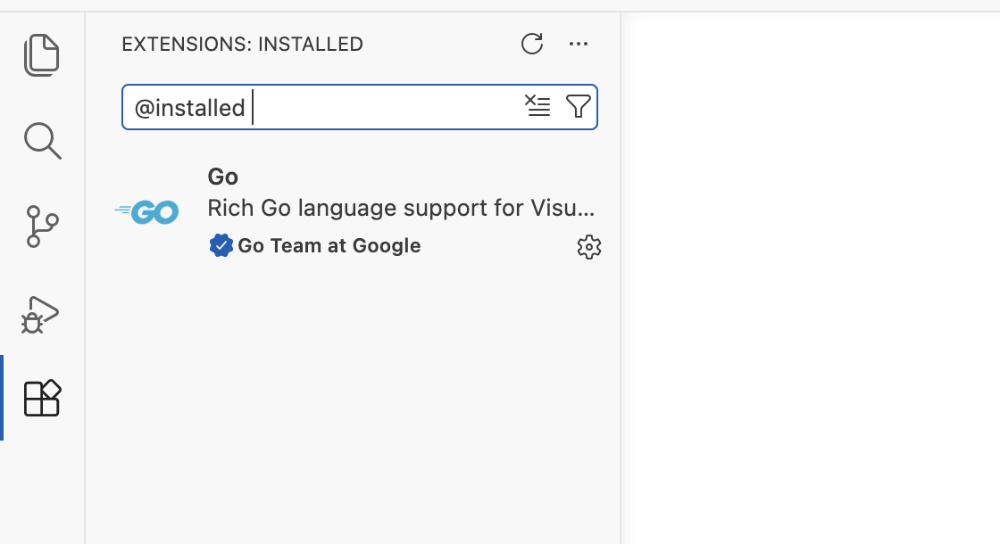
golang.go и нажмите Install.Проверьте, что расширение нашло Go и gopls
Откройте любой файл .go проекта. В правом нижнем углу окна, в строке состояния, появится версия Go — на кадрах этой главы 1.27.1. Это значит, что расширение нашло установленный Go.
Если gopls ещё не установлен, расширение при первом открытии файла Go сообщит об этом уведомлением внизу справа; нажмите в нём Install. То же делает команда палитры Go: Install/Update Tools: в открывшемся списке отметьте gopls и нажмите OK. Установка выполняется командой go install и занимает до минуты.
Откройте proba/main.go и посмотрите на подчёркивания
Откройте proba/main.go из проводника. Через секунду-две gopls проверит файл.
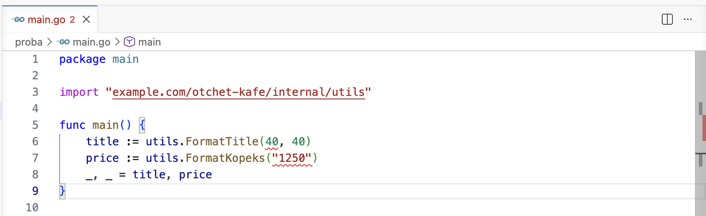
40 в строке 6 и "1250" в строке 7. На вкладке после имени файла — цифра 2: столько ошибок в файле. Та же цифра стоит у имени файла в проводнике, а папка proba помечена красной точкой.Прочитайте сообщение
Наведите указатель на подчёркнутое 40 или поставьте на него курсор и нажмите CtrlCmd + K, затем CtrlCmd + I.
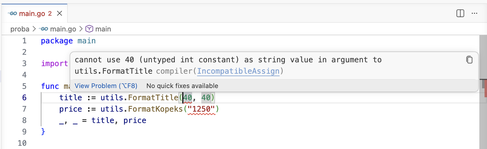
Сообщение читается по частям:
cannot use 40— нельзя использовать значение40;(untyped int constant)— что это за значение: целое число, записанное прямо в коде, у которого ещё нет окончательного типа. Такую константу Go переводит в нужный тип сам, если это возможно без потерь, но в строку число не переводится;as string value— там, где ожидается строка;in argument to utils.FormatTitle— в аргументе функцииFormatTitleпакетаutils;compiler(IncompatibleAssign)— кто сообщил и вид ошибки: сообщение компилятора, вид «несовместимое присваивание». Передача аргумента для Go — тоже присваивание: значение кладётся в параметр.
Для ошибок типов готового исправления обычно нет: какое значение нужно передать, решает разработчик.
Откройте панель Problems
Наведение показывает одно сообщение. Чтобы увидеть все ошибки сразу, открывают панель Problems: CtrlCmd + Shift + M, или щелчок по счётчику ошибок в левом нижнем углу окна.
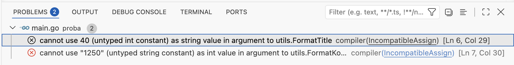
main.go в папке proba их две. В каждой строке — сообщение, источник compiler(IncompatibleAssign) и место: [Ln 6, Col 29] — строка 6, столбец 29. Щелчок по строке переводит курсор к месту ошибки.gopls в отличие от Pylance показывает ошибки не только открытых файлов, а всех пакетов модуля: файл может быть закрыт, а ошибка в нём всё равно окажется в панели. Это видно в §8.
Исправьте вызовы
Передайте значения тех типов, которые записаны в подписях: текст заголовка и целое число копеек.
title := utils.FormatTitle(" Итог ", 40) price := utils.FormatKopeks(125000)
Подчёркивания пропадут, панель Problems опустеет, счётчик в левом нижнем углу покажет 0. Файл проверен, хотя ни разу не собирался и не запускался.
§4Три уровня проверки на одном файле
Режимов строгости, как у Pylance, у компилятора Go нет: всё, что противоречит типам, — ошибка, и программа не собирается. Но бывает код, который собирается и при этом почти наверняка ошибочен. Его находят следующие уровни проверки: go vet из поставки Go и отдельная программа staticcheck. Чтобы было видно, что добавляет каждый уровень, один файл проверен всеми тремя. Замените содержимое proba/main.go:
package main import ( "fmt" "strings" "example.com/otchet-kafe/internal/utils" ) func main() { name := "иванов пётр" strings.ToUpper(name) total := 125000 fmt.Printf("Итог: %d\n", utils.FormatKopeks(total)) for i := 0; i < 3; i++ { total = total } fmt.Println(utils.FormatKopeks(total)) }
proba/main.go:16:3: self-assignment of total proba/main.go:14:24: fmt.Printf format %d has arg utils.FormatKopeks(total) of wrong type string
Что не так в каждом месте и какой уровень это находит:
| Строка | Что не так | Что будет при запуске | go build | go vet | staticcheck |
|---|---|---|---|---|---|
14, Printf("… %d", строка) | Указатель %d ждёт число, а FormatKopeks возвращает строку | печатает Итог: %!d(string=1 250,00 ₽) | — | ⚠ | ⚠ |
16, total = total | Переменная присваивается сама себе: строка ничего не делает, задуманное действие потеряно | работает, сумма не меняется | — | ⚠ | ⚠ |
12, strings.ToUpper(name) | Результат вызова не сохранён. ToUpper возвращает новую строку и не меняет name | работает, имя остаётся строчными буквами | — | — | ⚠ |
Обозначения: ⚠ — замечание, — — уровень строку не отмечает. Таблица читается слева направо как лестница: компилятор собирает файл без ошибок, go vet находит два места, staticcheck — все три. Ни одно из этих мест не противоречит типам: Printf принимает аргументы любого типа, присваивание int в int законно, вызов функции без сохранения результата разрешён. Поэтому компилятор молчит, а находят их программы, которые знают типичные ошибки.
staticcheck в поставку Go не входит. Запустить его без установки можно так же, как pkgsite в главе 4.6:
$ go run honnef.co/go/tools/cmd/staticcheck@latest ./proba proba/main.go:12:2: ToUpper doesn't have side effects and its return value is ignored (SA4017) proba/main.go:14:13: Printf format %d has arg #1 of wrong type string (SA5009) proba/main.go:16:3: self-assignment of total to total (SA4018) exit status 1
У каждого замечания staticcheck в скобках код правила: SA4017 — «результат функции без побочных действий не используется». По коду правило находят в документации staticcheck. Строка exit status 1 добавлена командой go run: программа завершилась с кодом 1, потому что нашла замечания.
Как этот файл выглядит в редакторе:
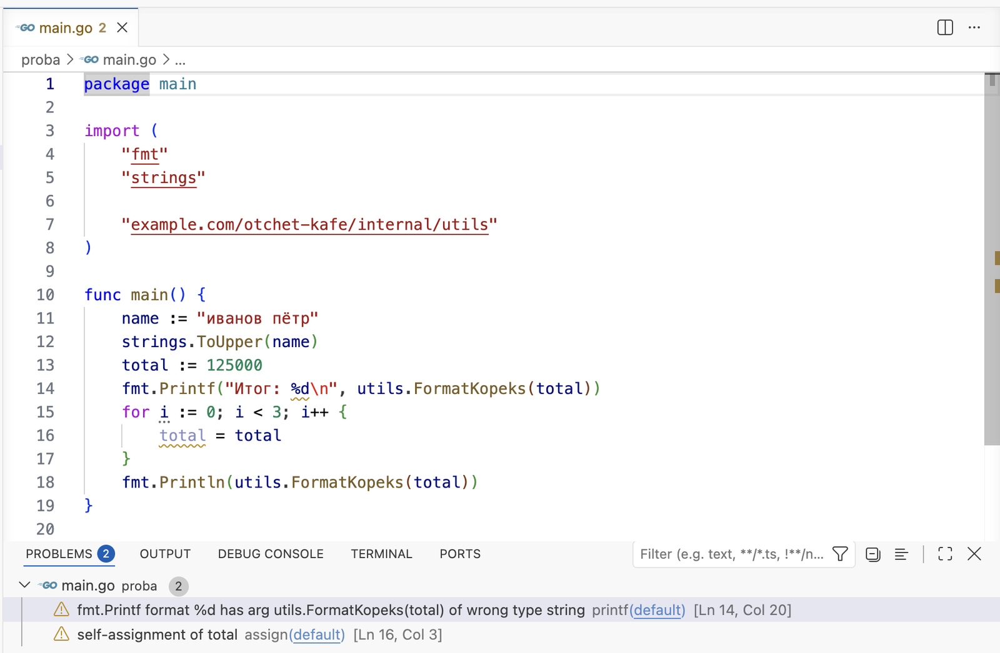
printf и assign — это те же проверки, что выполняет go vet. Строку 12 gopls не отметил: правила staticcheck в нём по умолчанию выключены. Три точки под i в строке 15 — не замечание, а подсказка gopls, что цикл можно записать короче; в панель Problems она не попадает.| Уровень | Что проверяет | Когда запускают |
|---|---|---|
go build | Всё, что противоречит типам и правилам языка: неверный аргумент, неиспользованная переменная, лишний импорт | Всегда: без этого программы нет |
go vet | Типичные ошибки в коде, который собирается: форматы Printf, присваивание самому себе, неверные имена примеров | Перед коммитом и в проверках запроса на слияние — режим курса |
| staticcheck | То же и сотни других правил: неиспользованные результаты, лишний код, устаревшие функции | Можно включить для себя: замечания полезные, но в проверках при сдаче их нет |
В курсе обязательны go build и go vet: обе команды входят в Go и не требуют установки, а gopls в редакторе показывает почти то же самое. После опыта удалите папку proba или верните в неё файл с двумя вызовами из §2 — он нужен в следующем параграфе.
§5go build и go vet в терминале
gopls нашёл обе ошибки, но работает только у того, кто пишет код в VS Code с расширением Go. Для проверки при сдаче работы нужны команды, которые одинаково выполняются на любом компьютере и на сервере репозитория. Это go build и go vet. Верните в proba/main.go оба неверных вызова из §2 и сохраните файл.
Откройте терминал и соберите модуль
Терминал редактора открывается сочетанием Ctrl + ` (на всех системах) или через меню Terminal → New Terminal. Он запускается в папке проекта. Выполните две команды одной строкой:
$ go version && go build ./...
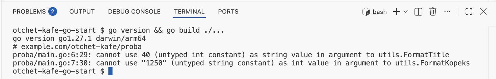
# example.com/otchet-kafe/proba называет пакет, в котором найдены ошибки. Дальше по строке на ошибку: proba/main.go:6:29 и proba/main.go:7:30 — файл, строка и столбец. Итоговой строки со словом «найдено», как у mypy, нет: если ошибки есть, они напечатаны, а исполняемые файлы не созданы.Запись ./... означает «все пакеты в этой папке и во вложенных». Команда go build ./proba для одного пакета здесь не подойдёт: собрав пакет main, она попробует записать исполняемый файл с именем proba рядом и споткнётся о папку с тем же именем. При сборке нескольких пакетов go build исполняемые файлы не сохраняет, а только проверяет, что всё собирается.
Перейдите к месту ошибки
Имя файла с номером строки в выводе — ссылка. Удерживайте CtrlCmd и щёлкните по proba/main.go:6:29: VS Code откроет файл и поставит курсор в строку 6, столбец 29. В длинном отчёте так не приходится искать файл в проводнике.
Исправьте и проверьте снова
Замените вызовы на исправленные, как в последнем шаге §3, сохраните файл (CtrlCmd + S) и выполните сборку вместе с go vet. Стрелка ↑ в терминале возвращает предыдущую команду.
$ go build ./... && go vet ./...
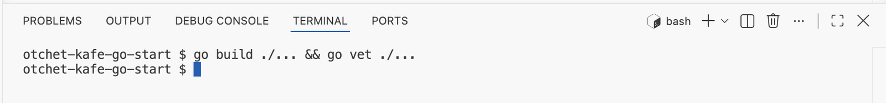
&& запускает вторую команду, только если первая прошла без ошибок.go build читает файлы с диска, поэтому перед запуском файл нужно сохранить. gopls проверяет и несохранённый текст. Если редактор ошибок не показывает, а терминал показывает, первым делом проверьте, сохранён ли файл: на вкладке несохранённого файла вместо крестика стоит точка.
Пара go build ./... и go vet ./... запускается перед коммитом и в проверках репозитория. Вместе с go test ./... из темы 02 это три команды, после которых работу можно сдавать. Папку proba после опытов удаляют.
§6Как читать строку ошибки
Каждая ошибка в выводе компилятора занимает одну строку, иногда с пояснением на следующих строках. Строение у всех одинаковое. Разберём первую строку из §5:
# путь/пакета.Целиком сообщение читается так: «нельзя использовать 40 (целую константу) как строковое значение в аргументе функции utils.FormatTitle». Кодов правил, как у mypy, в выводе компилятора нет; gopls добавляет к тому же тексту вид ошибки в скобках — по нему ошибку находят в документации. Сообщения, которые встречаются чаще других:
| Сообщение компилятора | Вид в gopls | Что не так | Пример |
|---|---|---|---|
cannot use X (…) as T value in argument to F | IncompatibleAssign | Аргумент, присваивание или возврат не того типа | FormatTitle(40, 40) |
invalid operation: … (mismatched types A and B) | MismatchedTypes | Операция над значениями разных типов | "," + cents, где cents int |
not enough arguments in call to F | WrongArgCount | Передано меньше аргументов, чем в подписи | RevenueByWaiter(orders) |
assignment mismatch: 1 variable but F returns 2 values | WrongAssignCount | Принято меньше результатов, чем возвращает функция | avg := CalculateAverage(…) |
not enough return values | WrongResultCount | В return меньше значений, чем в подписи | нет nil для ошибки |
X.Y undefined (type T has no field or method Y) | MissingFieldOrMethod | У значения нет такого поля или метода | order.Kopek вместо order.Kopeks |
declared and not used: x | UnusedVar | Переменная объявлена и ни разу не использована | heading := … без чтения |
"os" imported and not used | UnusedImport | Пакет импортирован и не используется | лишний import "os" |
Почти все сообщения построены по одной схеме: какое значение, какого оно типа и где ожидался другой тип. Две последние строки таблицы — особенность Go: в Python неиспользованная переменная или лишний импорт не мешают запуску, в Go это ошибки сборки. Примеры с настоящим выводом по каждому виду — в главе 4.4.
§7Одна ошибка в двух программах
gopls и компилятор нашли в proba/main.go одни и те же две ошибки, и описали их одинаково. Это не совпадение: gopls проверяет типы пакетом go/types из поставки Go, а в компилятор встроена его копия с теми же правилами и текстами сообщений. Сравнение для строки 6:
| gopls | go build | |
|---|---|---|
| Где видно | Подчёркивание, всплывающее сообщение, панель Problems | Строка в терминале |
| Текст сообщения | cannot use 40 (untyped int constant) as string value in argument to utils.FormatTitle | тот же |
| Вид ошибки | compiler(IncompatibleAssign) | не печатается |
| Место | [Ln 6, Col 29] | proba/main.go:6:29 |
| Какие пакеты | все пакеты модуля сразу | до первого пакета с ошибками, см. §8 |
В отличие от пары Pylance и mypy, по сути ошибки gopls и компилятор практически не расходятся: если gopls подчеркнул строку красным как ошибку компилятора, программа не соберётся, и наоборот. Отличается только объём: сколько ошибок видно за один раз.
§8Ошибки в нескольких пакетах
До сих пор ошибки были в одном пакете. В проекте их обычно больше, и здесь go build и gopls ведут себя по-разному. Опыт делается на первом архиве — в нём двенадцать ошибок типов в разных пакетах, его исправляют в практике 4.5.
Распакуйте архив, откройте его папку в VS Code и выполните в терминале go build ./...:
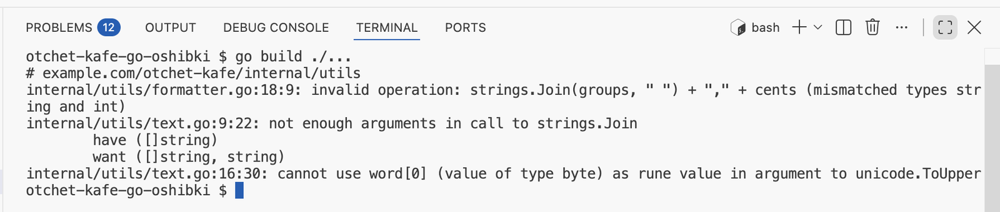
internal/utils. Об ошибках в domain, services и main.go ни слова.Причина — порядок сборки. Пакеты собираются от тех, что ни от чего не зависят, к тем, что их импортируют: сначала utils, затем domain, который импортирует utils, затем services, последним main. Если пакет не собрался, пакеты, которые от него зависят, компилятор не проверяет вовсе: опираться им не на что. Поэтому в терминале видны ошибки только «нижнего» пакета. Кроме того, компилятор прекращает перечислять ошибки одного пакета после десятой.
Теперь откройте панель Problems:
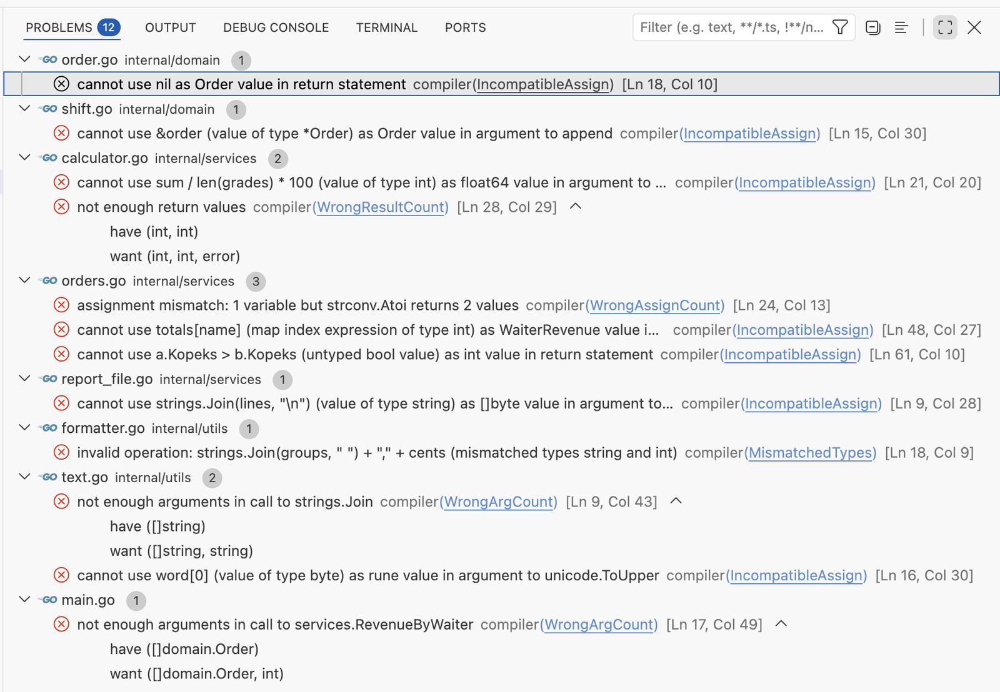
order.go в internal/domain до main.go. У ошибок с пояснением — например, not enough arguments in call to strings.Join — ниже две строки have и want: какие типы переданы и какие ожидались.gopls проверяет каждый пакет, даже если пакет, от которого он зависит, содержит ошибки: о функциях utils ему достаточно подписей, а подписи в нём верные. Поэтому в редакторе видна вся картина сразу, а в терминале — по слоям: исправили utils, запустили снова — появились ошибки domain, и так далее. Как это использовать для порядка работы, разобрано в практике 4.5.
§9Какой тип видит проверка
В сообщениях выше компилятор называл типы значений: untyped int constant, []string. Не все эти типы записаны в коде: у переменных, объявленных через :=, тип выводится из значения. Когда сообщение непонятно, полезно посмотреть, какой тип вывел компилятор. Способов два.
В редакторе — наведением указателя на имя переменной. Замените содержимое proba/main.go программой ниже и наведите указатель на low в строке 10:
package main import ( "fmt" "example.com/otchet-kafe/internal/services" ) func main() { low, high, err := services.GradeBounds([]int{5, 3, 4}) fmt.Println(low, high, err) }
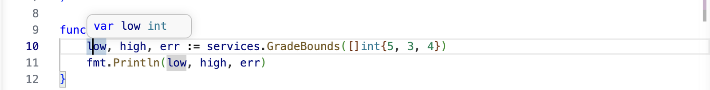
var low int — gopls взял тип из подписи GradeBounds(…) (low, high int, err error). Так же можно навести указатель на high и err.При запуске — указателем %T в fmt.Printf: он печатает тип значения. Отдельной команды вроде reveal_type в mypy в Go нет, и она не нужна: тип известен на любом шаге, и программа с %T обычная, её можно запустить.
package main import ( "fmt" "example.com/otchet-kafe/internal/services" ) func main() { low, high, err := services.GradeBounds([]int{5, 3, 4}) fmt.Printf("%T %T %T\n", low, high, err) fmt.Println(low, high, err) }
int int <nil> 3 5 <nil>
Третий тип напечатан как <nil>, а не error: %T показывает тип значения, которое лежит в переменной при работе. Ошибки не было, и в переменной типа error пусто. Так видна разница между типом переменной — его знает компилятор — и типом значения внутри интерфейса, который становится известен только при работе.
§10Чего проверка не находит
Компилятор находит любые несовпадения с типами. Есть ошибки другого рода, которых он не видит: проверка работает с текстом программы, а данные, которые появятся при работе, ей недоступны. В LoadOrders сумма читается из файла вызовом strconv.Atoi(row["kopeks"]). Для компилятора всё верно: функция возвращает целое число и ошибку. Если в файле окажется слово «сто», Atoi вернёт ошибку при работе, и только проверка if err != nil не даст программе продолжить с нулём вместо суммы.
| Находит компилятор | Не находит компилятор |
|---|---|
| Аргумент, присваивание или возврат не того типа | Неверные данные в файле или в ответе сервера |
| Неверное число аргументов и результатов | Ошибку в расчёте: + вместо - между числами |
| Опечатку в имени поля или метода | Обращение через пустой указатель nil |
| Неиспользованную переменную и импорт | Запись в нулевой словарь, выход за границу среза |
| Операцию над значениями разных типов | Неверное утверждение типа у any: value.(int) при строке внутри |
Ошибки из правой колонки при работе останавливают программу с сообщением panic — их примеры в главах 4.2 и 4.4. Их закрывают тесты, проверки данных внутри функций и проверка ошибок после каждого вызова. Часть таких мест находит go vet: например, неверный формат в Printf, как в §4.
Подавить ошибку компиляции нельзя: аналога # type: ignore в Go нет. Ошибку исправляют, иначе программа не собирается. Для замечаний staticcheck подавление есть — комментарий //lint:ignore КОД причина на строке перед замечанием, но в работах курса подавления не используются: каждое замечание исправляется кодом.
§11Проверьте себя
Расширение Go установлено, но ошибки в коде не подчёркиваются. Что проверить?
Что расширение нашло Go и gopls: в строке состояния внизу справа должна стоять версия Go, а уведомления об отсутствии gopls быть не должно. Если gopls не установлен, выполните команду палитры Go: Install/Update Tools и отметьте его. И что открыта папка с go.mod, а не папка выше неё.
Что означает строка proba/main.go:7:30: cannot use "1250" (untyped string constant) as int value in argument to utils.FormatKopeks?
В файле proba/main.go, строка 7, столбец 30, передана строка "1250" туда, где функция FormatKopeks ждёт целое число.
Файл исправлен, gopls подчёркиваний не показывает, а go build по-прежнему сообщает об ошибке. Почему?
Файл не сохранён. gopls проверяет текст в редакторе, go build — файл на диске.
Почему go build ./... на первом архиве показывает 3 ошибки, а панель Problems — 12?
Компилятор не собирает пакеты, которые зависят от несобранного пакета, поэтому видны только ошибки internal/utils. gopls проверяет каждый пакет отдельно, опираясь на подписи, и показывает ошибки всех пакетов сразу.
Программа собирается. Что найдёт go vet в строке fmt.Printf("Итог: %d\n", utils.FormatKopeks(total))?
Что указатель %d ждёт целое число, а передана строка: fmt.Printf format %d has arg … of wrong type string. Компилятор это не находит: Printf принимает аргументы любого типа.
Программа прошла go build и go vet. Может ли она остановиться с ошибкой при запуске?
Может. Данные из файлов и сети проверке недоступны, а обращение через nil, запись в нулевой словарь, выход за границу среза и неверное утверждение типа обнаруживаются только при работе. Такие ошибки находят тесты и проверки внутри функций.
§12Шпаргалка по главе
расширение golang.go
Go: Install/Update Tools → gopls
включать проверку не нужно
подчёркивание и наведение
панель Problems: Ctrl+Shift+M
go build ./...
go vet ./...
тишина — значит, ошибок нет
файл:строка:столбец: сообщение
# путь/пакета — заголовок
go vet — форматы, самоприсваивание
go run honnef.co/go/tools/cmd/staticcheck@latest ./...
наведение на имя — gopls
fmt.Printf("%T", x) — при запуске
Итог главы
В Go проверку типов выполняет компилятор, и отключить её нельзя: программа с ошибкой типа не собирается. gopls в редакторе проверяет код по тем же правилам во время набора, показывает ошибки подчёркиванием, во всплывающем сообщении и в панели Problems — сразу для всех пакетов модуля. go build ./... в терминале печатает по строке на ошибку: файл, строка, столбец и сообщение «что передано / что ожидалось», и останавливается на первом пакете с ошибками. go vet находит ошибки в коде, который собирается, staticcheck — ещё больше таких мест. Тип, который вывел компилятор, показывает наведение в редакторе, а при работе — %T.
- Команды
go buildиgo vet— документация команды go; анализаторы vet — cmd/vet. - Языковой сервер и его диагностика — документация gopls; расширение — vscode-go.
- Правила staticcheck и их коды — staticcheck.dev, Checks.
- Выводы получены на архивах проекта темы с Go
1.27и staticcheck2026.2; кадры сняты в VS Code1.138с расширением Go0.56и gopls0.24.